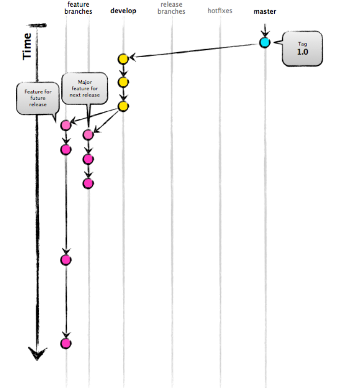
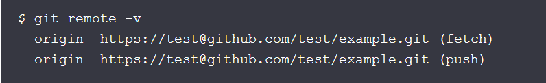

Introducing GitFlow
GitFlow is a branching model for Git, created by Vincent Driessen. It has attracted a lot of attention because it is very well suited to collaboration and scaling the development team
Key benefits:
How it works
- Some basic commands include:
- git flow init
- git flow feature start
- git flow feature finish
- git flow feature publish
Repository
Git is a program that tracks changes made to files. Once installed, Git can be initialized on a project to create a Git repository. A Git repository is the .git/ folder inside a project. This repository tracks all changes made to files in your project, building a history over time. Meaning, if you delete the .git/ folder, then you delete your project’s history. Read more
Clone
If you want to get a copy of an existing Git repository — for example, a project you’d like to contribute to — the command you need is git clone. If you’re familiar with other VCS systems such as Subversion, you’ll notice that the command is "clone" and not "checkout". This is an important distinction — instead of getting just a working copy, Git receives a full copy of nearly all data that the server has. Every version of every file for the history of the project is pulled down by default when you run git clone.
You clone a repository with git clone <url>.
Fork a repo
A fork is a copy of a repository. Forking a repository allows you to freely experiment with changes without affecting the original project. Most commonly, forks are used to either propose changes to someone else's project or to use someone else's project as a starting point for your own idea. Propose changes to someone else's project For example, you can use forks to propose changes related to fixing a bug.
- Rather than logging an issue for a bug you've found, you can:

Branch
A branch represents an independent line of development. Branches serve as an abstraction for the edit/stage/commit process. You can think of them as a way to request a brand new working directory, staging area, and project history. New commits are recorded in the history for the current branch, which results in a fork in the history of the project.
The git branch command lets you create, list, rename, and delete branches. It doesn’t let you switch between branches or put a forked history back together again.
Master branch
The default branch name in Git is master. As you start making commits, you’re given a master branch that points to the last commit you made. Every time you commit, the master branch pointer moves forward automatically.
- A new branch can be created by typing the following command:
- git branch <exampleBranch >
Git Commit
The git commit command captures a snapshot of the project's currently staged changes. Committed snapshots can be thought of as “safe” versions of a project—Git will never change them unless you explicitly ask it to. Prior to the execution of git commit, The git add command is used to promote or 'stage' changes to the project that will be stored in a commit. These two commands "git commit" and "git add" are two of the most frequently used. Read More
Git Merge
Merging is Git's way of putting a forked history back together again. The "git merge" command lets you take the independent lines of development created by "git branch" and integrate them into a single branch.
Git merge will combine multiple sequences of commits into one unified history. In the most frequent use cases, git merge is used to combine two branches. The following examples in this document will focus on this branch merging pattern. In these scenarios, git merge takes two commit pointers, usually the branch tips, and will find a common base commit between them. Once Git finds a common base commit it will create a new "merge commit" that combines the changes of each queued merge commit sequence. Read More
Git Checkout
The "git checkout" command lets you navigate between the branches created by "git branch". Checking out a branch updates the files in the working directory to match the version stored in that branch, and it tells Git to record all new commits on that branch. Think of it as a way to select which line of development you’re working on.
The git checkout command may occasionally be confused with git clone. The difference between the two commands is that clone works to fetch code from a remote repository, alternatively checkout works to switch between versions of code already on the local system.
-
The git checkout command accepts a -b argument that acts as a convenience method which will create the new branch and immediately switch to it.
- git checkout -b
Git Push
The git push command is used to upload local repository content to a remote repository. Pushing is how you transfer commits from your local repository to a remote repo. It's the counterpart to git fetch, but whereas fetching imports commits to local branches, pushing exports commits to remote branches. Remote branches are configured using the git remote command. Pushing has the potential to overwrite changes, caution should be taken when pushing. Read More

Git Pull
The "git pull" command is used to fetch and download content from a remote repository and immediately update the local repository to match that content. Merging remote upstream changes into your local repository is a common task in Git-based collaboration work flows. The git pull command is actually a combination of two other commands, git fetch followed by git merge. In the first stage of operation git pull will execute a git fetch scoped to the local branch that HEAD is pointed at. Once the content is downloaded, git pull will enter a merge workflow. A new merge commit will be-created and HEAD updated to point at the new commit.
-
Command used:
- git pull < remote>
Remote Add / Remove / Show
The "remote" command helps you to manage connections to remote repositories. It allows you to show which remotes are currently connected, but also to add new connections or remove existing ones.
remove <name>
Disconnects the remote from the local repository. Note that this will have no effect on the actual remote repository (i.e. the repository itself is not removed / deleted / etc.).
rename <old-name> <new-name>
You can request a list of all remote repositories that are currently connected to your local repository:
 Read moreGit Status
The git status command displays the state of the working directory and the staging area. It lets you see which changes have been staged, which haven’t, and which files aren’t being tracked by Git. Status output does not show you any information regarding the committed project history. For this, you need to use git log.
Usage
- git status